Language Families
Our first research sub-question investigates: What similarities and differences exist among the topics and vocabularies of song lyrics in languages of shared language families? Analyzing a corpus of Eurovision song lyrics from 2008 to 2025, this analysis compares lexical repetition (lyrics) and semantic focus (topics) across four groups: all language families combined, Indo-European languages, Uralic languages and other language families (such as Afro-Asiatic, Kartvelian and Turkic). We use Voyant Tools (Cirrus, Terms, Contexts and Trends) to move from surface-level word frequency to broader thematic patterns.
Shared vocabulary across all language families
As seen in this Cirrus visualization, a small set of high-frequency words dominates Eurovision lyrics across all languages, indicating a shared performative vocabulary.
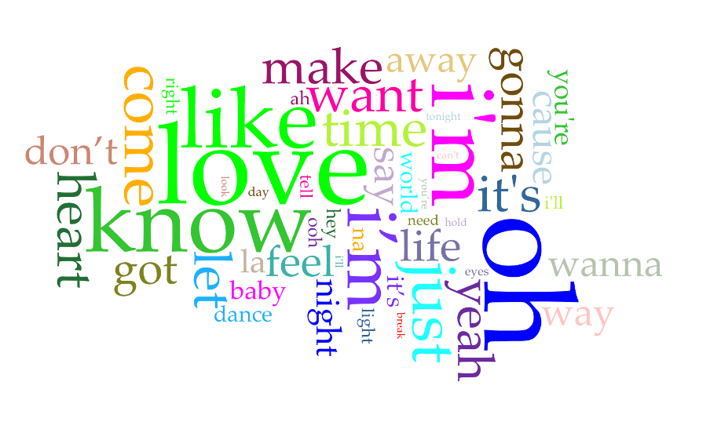 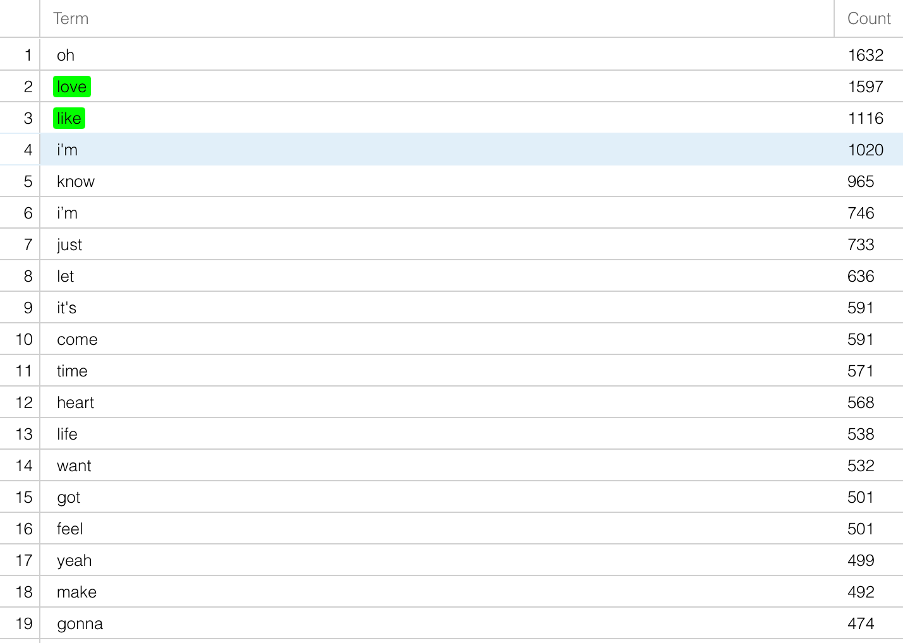According to the Terms panel, the top five words - such as oh (1632), love (1597), like (1116), I’m (1020) and know (965) - appear 6330 times, together accounting for a substantial share of all word occurrences. Contexts’ analysis shows that many of these words function as fillers or rhythmic markers rather than carriers of meaning, appearing repeatedly in similar lyrical positions.
Trends' visualization confirms that these words remain prominent across most of the 18 years analyzed, indicating long-term stability rather than short-lived trends.
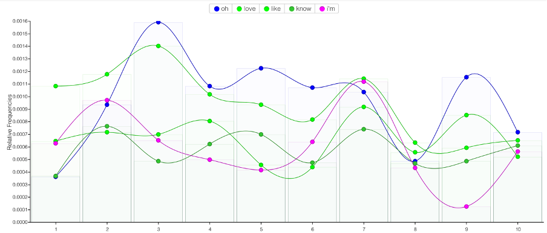This suggests that Eurovision lyrics across language families rely on a shared performative vocabulary shaped by pop music conventions rather than linguistic structure alone.
Shared topics across all language families: meaning beyond sound
While lyrics tend to rely on word repetition, when the analysis shifts from lyrics to topics, the vocabulary becomes more semantically focused across all Eurovision songs.
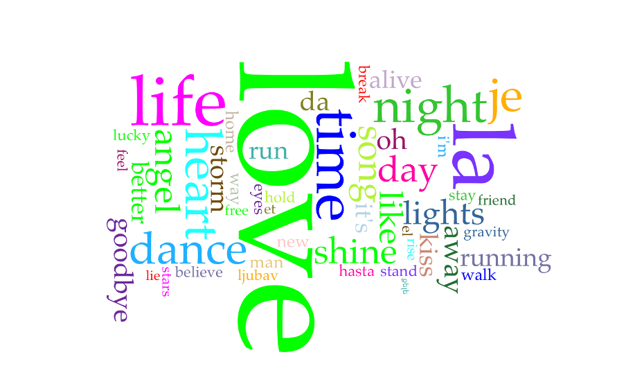In the topic-based Cirrus visualization, words such as love, life, time and night emerge as the most prominent. The Terms panel shows that love alone appears 37 times, making it the most common thematic concept across the entire dataset.
Unlike lyrical fillers, Contexts’ analysis demonstrates that topic words appear in varied but meaningful constructions, often forming the emotional or narrative core of songs.
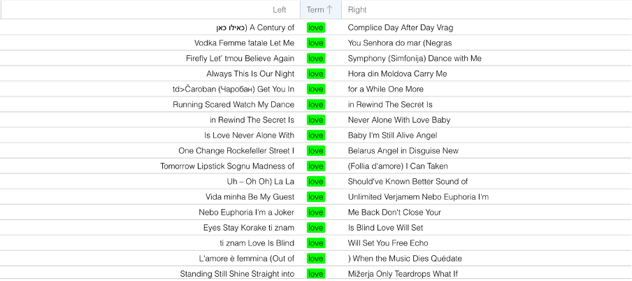Trends show that these thematic concepts remain stable over time, suggesting that Eurovision maintains a consistent set of shared topics even as languages vary.
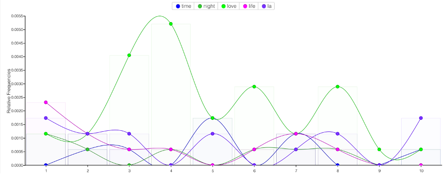Indo-European languages: strong standardization in lyrics and topics
Isolating only songs using languages from Indo-European language families, the emerging pattern is one of high vocabulary repetition and stable thematic focus across time.
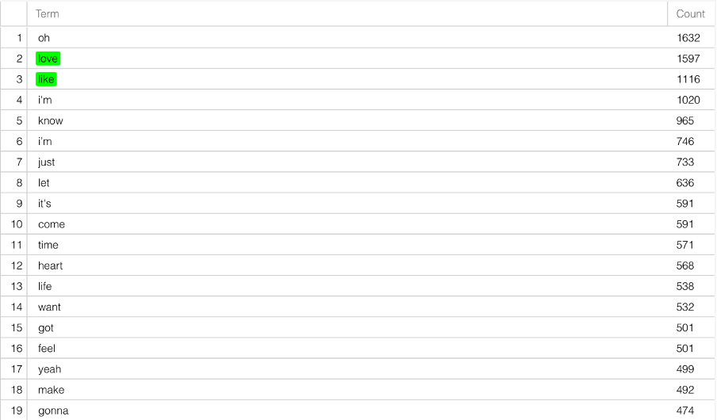 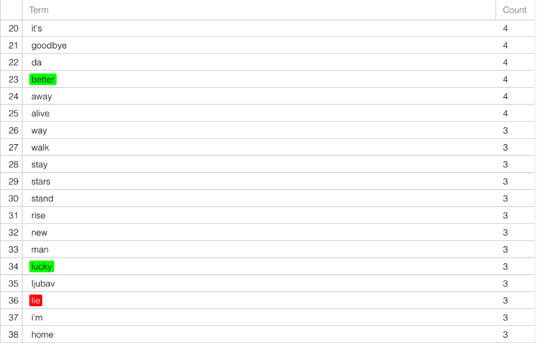 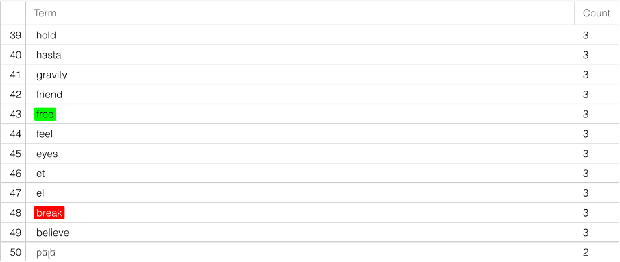The Indo-European language group displays the highest degree of standardization. In lyrical analysis, Cirrus and Terms tools reveal that a very small number of words dominate overall vocabulary. The top exclamation word oh appears 1632 times, while the top five words together account for 6330 occurrences within the top 50 terms; Contexts’ analysis confirms that these words are used in repetitive, predictable positions.
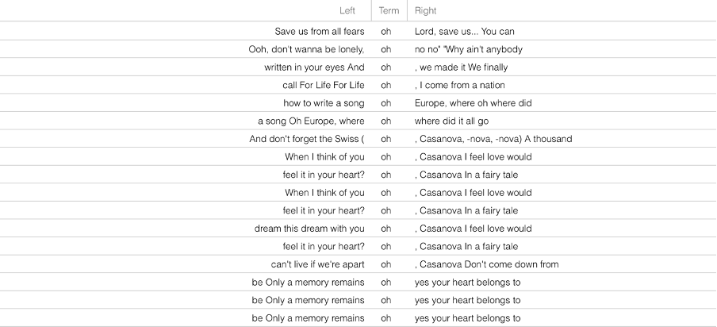 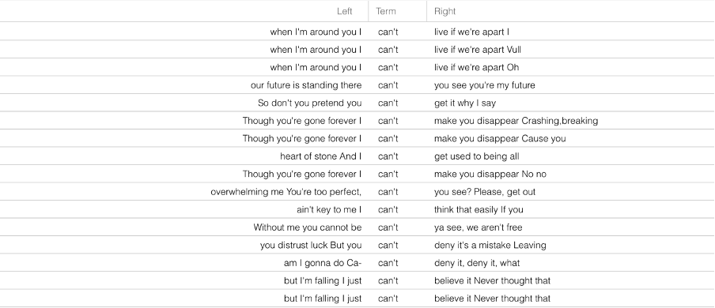Topic analysis also reinforces this pattern - words such as love, life and time dominate both Cirrus and Terms, with love appearing 37 times.
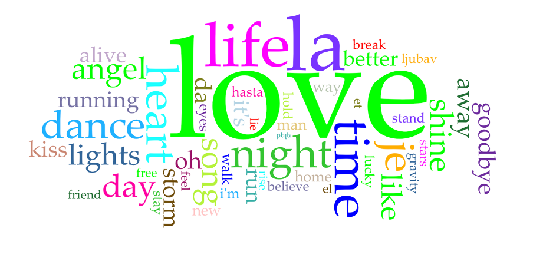 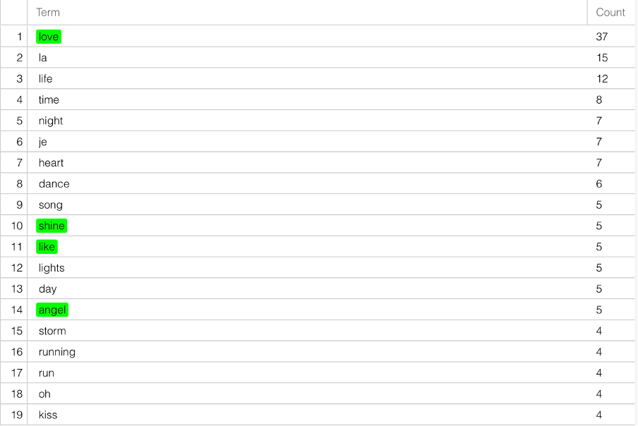Trends indicate that these themes remain consistently present throughout the timeframe.
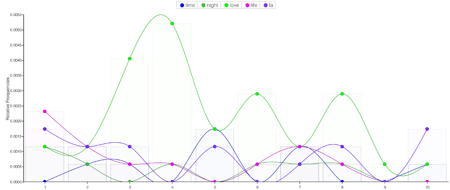The overlap between lyrical repetition and thematic stability suggests that Indo-European songs strongly align with Eurovision’s stylistic and conceptual norms.
Uralic languages: lyrical flexibility and thematic distinction
Songs in languages from the Uralic family (i.e. Estonian, Finnish, Sami, Udmurt and Hungarian) rely less on repetition and show greater thematic variation.
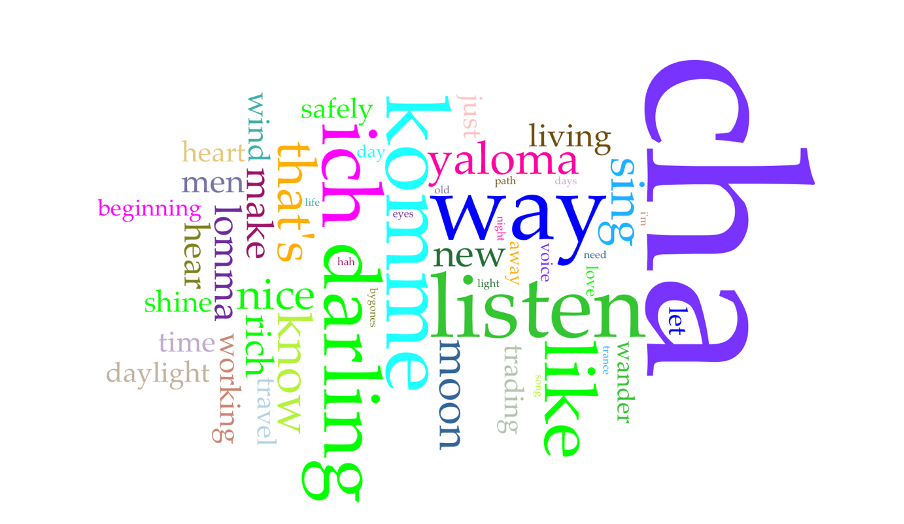 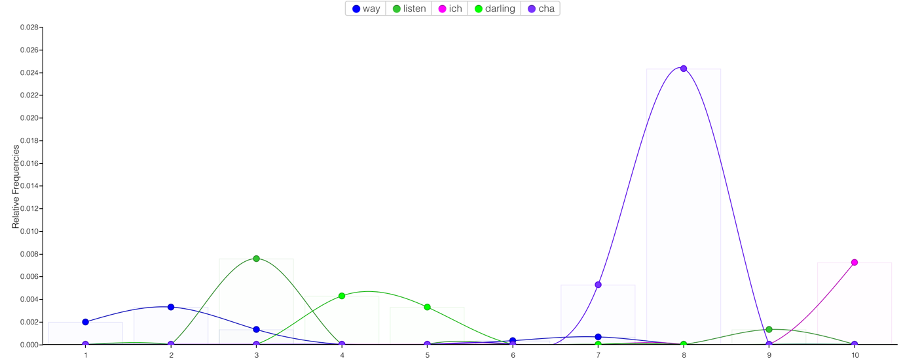The Uralic language group presents a contrasting pattern to the other language families. In the lyrical analysis, Cirrus highlights sound-based elements such as cha, which appear frequently (90 times) but carry little semantic weight, being used in just one song. Terms and Contexts show lower repetition overall, and Trends reveal greater fluctuation across years.
However, topic analysis tells a different story. Although the topic corpus is smaller (33 topic words), the dominant terms are semantically meaningful and less standardized than in the Indo-European group.
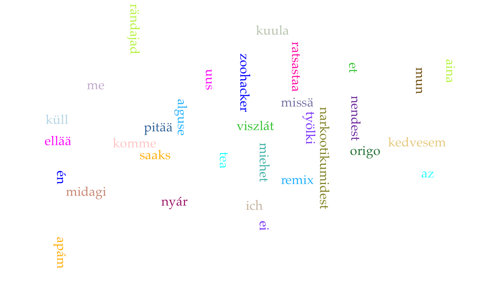Contexts show that these words are used in more specific narrative environments.
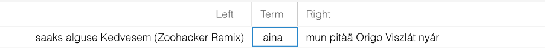This divergence suggests that Uralic songs may conform rhythmically to Eurovision norms while maintaining greater thematic individuality.
Other language families (Afro-Asiatic, Kartvelian, Turkic, as well as imaginary languages): diversity and analytical limits
Smaller language groups resist standardization, emphasizing diversity over repetition.
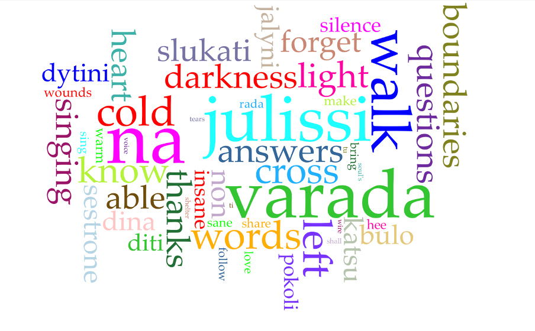
The group of other language families displays the greatest diversity. In lyrical analysis, Cirrus highlights phonetic elements such as na, while Terms show a fragmented vocabulary with no dominant core. Contexts confirm that many frequent elements function as sound rather than meaning.
With only 24 topic words, no single theme dominates and the Trends tool shows irregular usage across years. This group demonstrates the limits of frequency-based comparison and highlights how some Eurovision entries prioritize linguistic identity over shared thematic conventions.
Conclusion: shared form, divergent meaning
The comparison of lyrics and topics across language families reveals a consistent pattern: while Eurovision songs tend to converge in lyrical form, they diverge more clearly in thematic focus. Across all groups, lyrics rely heavily on a small set of high-frequency words and sound-based elements, reflecting the performative and musical demands of the Contest. These patterns remain stable over time, suggesting that repetition and simplicity are structural features of Eurovision songwriting.
Topic-based analysis, however, exposes meaningful differences between language families. Indo-European songs show strong thematic standardization, while Uralic and other language families display greater variation and specificity. In these groups, themes are less constrained by dominant Eurovision conventions and more closely tied to linguistic or cultural contexts. This contrast highlights how shared musical forms can coexist with distinct approaches to meaning.
Overall, the findings demonstrate that language family plays an important role in shaping how themes are expressed, even within a highly standardized musical environment. Our hypothesis about same language family songs sharing greater lexical and thematic similarity than songs across different families is therefore generally confirmed. By combining multiple Voyant tools, this project shows how digital text analysis can uncover both common structures and subtle differences, offering a clearer understanding of linguistic diversity within Eurovision.